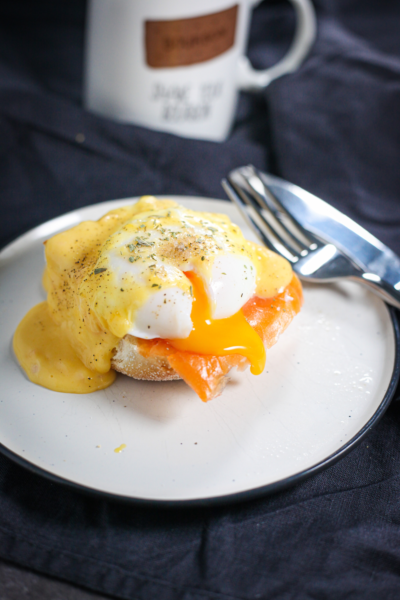

Eggs Benedict


Description
Eggs Benedict is a classic brunch dish consisting of a toasted English muffin topped with Canadian bacon or ham,
a perfectly poached egg, and drizzled with rich and creamy Hollandaise sauce. The combination of flavor, textures,
and the luscious sauce creates a delightful and indulgent breakfast experience.
Ingredients
- 2 English Muffins
- 2 Canadian bacon or ham
- 2 Eggs
- 3 egg yolks
- 1 tablespoon of lemon juice
- half a stick of butter
- a pinch of salt
- Cayeene pepper or hot sauce (optional)
- Chopped fresh parsley or chives (optional)
Steps
- Prepare the Hollandaise sauce. In a heatproof bowl, whisk together the egg yolks
and lemon juice until well combined.
- Place the bowl over a saucepan of simmering water, creating a double boiler.
Make sure the bottom of the bowl doesn't touch the water.
- Gradually whisk in the melted butter into the egg yolk mixture, a little at a time, until the
sauce thickens and emulsifies. This process may take a few minutes. Be sure to whisk constantly
to prevent the eggs from scrambling. Season with a pinch of salt and a dash of cayenne pepper
or hot sauce if desired. Remove the sauce from heat and keep it warm.
- Toast the English muffin halves until they are golden brown.
You can use a toaster or place them under the broiler for a few minutes.
- While the English muffins are toasting, cook the Canadian bacon or ham in a skillet
over medium heat until it is heated through. Set aside.
- Prepare the poached eggs. Fill a large saucepan with water and bring it
to a gentle simmer. Add a splash of vinegar to the water to help the eggs hold their shape.
- Carefully crack each egg into a separate small dish or ramekin. Create a gentle
whirlpool in the simmering water by stirring it with a spoon, then gently slide
the eggs, one at a time, into the swirling water. Poach the eggs or about 3-4 minutes
or until the whites are set but the yolks are still runny.
- While the eggs are poaching, assemble the Eggs Benedict. Place a toasted English muffin
half on a plate, followed by a slice or two of Canadian bacon or ham on top of each muffin half.
- Using a slotted spoon, carefully remove each poached egg from the water and place it on top of the
Canadian bacon or ham.
- Generously spoon the Hollandaise sauce over each poached egg. Garnish with chopped fresh
parsley or chives if desired.
NOTE:Adjust the quantities of ingredients according to the number
of servings you plan to make. You can also customize your Eggs Benedict by adding other
toppings like sautéed spinach, smoked salmon, or avocado slices.